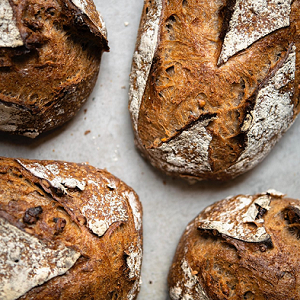

ABOUT THE PATISSERIE
Patisserie Emma grew up with a hunger for French pastries, breads and other baked goods. It was in primary school when the patisserie focused on becoming a patisserie. She worked hard at learning her craft, consistently producing fine breads and pastries. After primary school Patisserie Emma entered professional learning at Johnson and Wales University, concentrating on Baking and Pastry Arts. During her professional education, the patisserie excelled in producing traditional French baked breads and pastries. After graduating with paper in hand, Patisserie Emma, set off to France to learn from the masters. The patisserie worked for 5 years in an apprenticeship role to learn from the masters of bread and pastries. After completing the apprenticeship in France, Patisserie Emma returned to her home country with the tradition boulangerie concept for the classically southern melting pot of Charleston, SC. Patisserie Emma proved the concept in the design and success of Le Boulangerie classically styled at 161 East Bay Street. The decadent French pastries situated in the classic sultry southern Charleston, SC provides a one-of-a-kind dining experience to those brave enough to venture taste buds and senses in a dining delight.
REACH US
-
"NUMBER"
"EMAIL"
"2ND NUMBER"
"2ND EMAIL"

-
"DIRECTIONS"
"MAP"